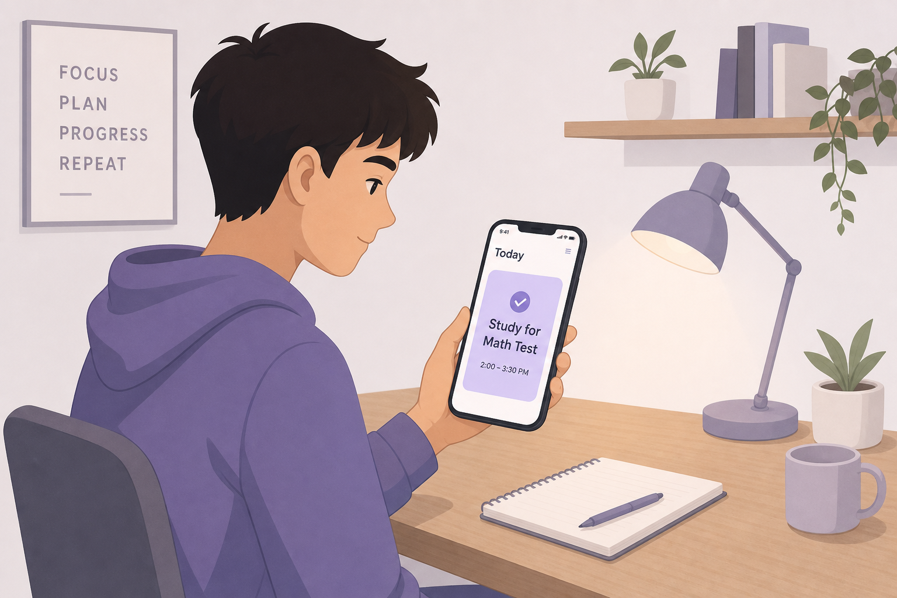

Maruxa Moreira
Digital Product Manager
Del comportamiento humano a las decisiones de producto.
Descubre cómo trabajoDescubro lo que los datos no dicen.
Y lo convierto en decisiones con impacto.
Analizo datos, observo comportamiento y trabajo codo a codo con negocio, diseño y tecnología para entender qué necesitan realmente las personas. Con eso busco la mejora con impacto en el usuario y en el negocio. Lo he hecho para Vodafone, BBVA y Mapfre.
Aprender es mi pasión y un hobby que practico desde niña. Cada cosa nueva que descubro la conecto con lo anterior, y esa curiosidad la aplico también en mi trabajo: me lleva a analizar, investigar y hacer preguntas hasta dar con el problema y con la mejor solución.
Leo funnels, grabaciones y mapas de calor hasta encontrar lo que importa de verdad.
Traduzco lo que pide el usuario en lo que el negocio tiene que construir. Elijo qué va primero por impacto, no por urgencia.
Trabajo bien con perfiles muy distintos: negocio, diseño, tecnología, cliente. Conecto los ángulos del proyecto hasta que todo tiene sentido.
Optimización de ventas digitales y experiencia omnicanal en banca
Detecté fricciones en el funnel y validé mejoras mediante análisis de datos y test A/B.
Ver casoMejora del buscador interno de FAQs
Subí el tNPS del 63% al 87% en el canal de ayuda digital, donde los usuarios llegan ya frustrados.
Ver casoOptimización del proceso "Dar un parte" en app
Identifiqué que el abandono en la elección del tipo de siniestro superaba el 80% y definí las mejoras para reducirlo.
Ver casoAQI personalizado para Madrid
AQI contextualizado integrando contaminación, meteorología, tráfico y eventos. Exploré efectos que los índices públicos no capturan.
Premio al Mejor Proyecto de Data ScienceBalambam Boo Fest
Festival de rock and roll independiente. Una década construyendo comunidad alrededor de la música.
10+ ediciones · 400 asistentes/edición
Asistente de ejecución académica
Proyecto en discovery. Alumnado neurodivergente en colegios ordinarios sin apoyo suficiente, y las familias cubriendo ese hueco. Investigando qué necesitan de verdad.
383% más alumnado TEA en 12 años.Soy Maruxa, una madre de dos hijos con los que descubro algo nuevo y fascinante cada día. Crecí entre las olas del Atlántico y mis grandes pasiones son la música en directo y seguir aprendiendo cosas nuevas y retadoras.
Organizo un festival desde hace más de diez años que nació de mi obsesión por ofrecer a las personas experiencias que les resulten memorables.
He recorrido muchos caminos antes de llegar aquí, y cada uno me ha aportado una mirada más amplia, más empatía y más criterio.
Cada etapa de ese recorrido me dio una capa nueva sobre la que construir: una forma de ver el producto de principio a fin, de observar a las personas, entender su comportamiento y saber qué necesitan de verdad.